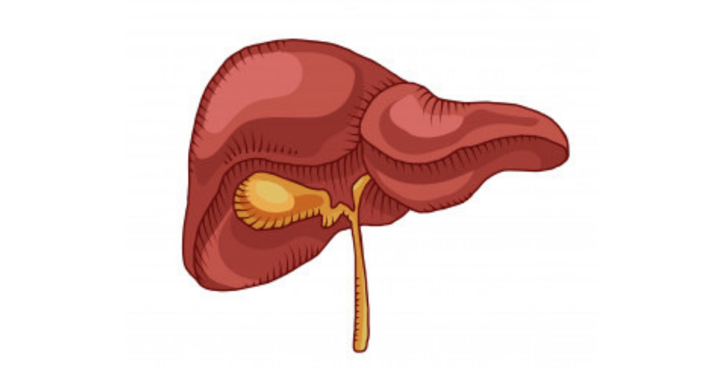

အသည်းအဆီဖုံးခြင်း

အသည်းအဆီဖုံးခြင်းအသည်းအဆီဖုံးတာက တကမ္ဘာလုံးမှာ အဖြစ်များလာပြီး ၂၅ ရာခိုင်နှုန်းလောက်မှာ တွေ့ရပါတယ်။ ဒီရောဂါဟာ အဝလွန်ခြင်း၊ အမျိုးအစား (၂) ဆီးချိုရောဂါနဲ့ တခြားအင်ဆူလင်ခံနိုင်ရည်ရှိတဲ့ ရောဂါတွေနဲ့ ဆက်စပ်နေပါတယ်။ ပိုပြီးအရေးကြီးတာက မကုဘဲထားမယ်ဆိုရင် ဒီ့ထက်ပိုဆိုးသွားမှာပဲ ဖြစ်ပါတယ်။အသည်းအဆီဖုံးတယ်ဆိုတာ ဘာလဲအသည်းအဆီဖုံးတာက အသည်းဆဲလ်ထဲမှာ အဆီစုလာတာကြောင့် ဖြစ်ပါတယ်။ ပုံမှန်လည်း အသည်း ဆဲလ်ထဲမှာ အဆီရှိတတ်ပေမယ့် ၅ ရာခိုင်နှုန်းကျော်လာရင်တော့ အသည်းအဆီဖုံးပြီလို့ သတ်မှတ်ပါတယ်။
အရက်သောက်တာကြောင့် အသည်းအဆီဖုံးတယ်လို့ ပြောပေမဲ့ ဒါက ဒီလောက် အရေးမပါပါဘူး။အသည်းအဆီဖုံးတာရဲ့ အကြောင်းရင်းကို Non Alcoholic Fatty Liver Disease (NAFLD) အရက်သောက်ခြင်းကြောင့် မဟုတ်သော အသည်းအဆီဖုံးခြင်းအဖြစ် သတ်မှတ်ထားပြီး အနောက်နိုင်ငံတွေမှာတော့ ဒါဟာ အဓိကအကြောင်းရင်းပဲ ဖြစ်ပါတယ်။အသည်းအဆီဖုံးတဲ့ အဆင့်က ကုသပျောက်ကင်းနိုင်ပါတယ်။ ဒါပေမဲ့ ရောဂါရှိမှန်း မသိကြတဲ့အတွက် ကြာလာတဲ့အခါ အသည်းရောင်တာအဖြစ် ပြောင်းသွားပါတယ်။အသည်းရောင်လာရင် အသည်းဆဲလ်ထဲမှာ အဆီတွေပိုစုလာပြီး ရောင်ရမ်းလာပါတယ်။ ပြီးတော့ တဖြည်းဖြည်း အသည်းခြောက်တဲ့အဆင့်ကို ပြောင်းသွားပါတယ်။ ကံမကောင်းတာက အသည်းအဆီဖုံးတာကနေ အသည်းရောင်တဲ့အဆင့်ကို ဘယ်အချိန်ပြောင်းမလဲ မသိတဲ့အတွက် သိတဲ့အချိန်မှာ အသည်းခြောက်တာနဲ့ အသည်းကင်ဆာတွေ ဖြစ်နေနိုင်ပါတယ်။အသည်းအဆီဖုံးတာက နှလုံးရောဂါ၊ ဆီးချိုရောဂါနဲ့ ကျောက်ကပ်ရောဂါတွေ ဖြစ်နှုန်းကို တက်စေပါတယ်။
ဘာကြောင့် အသည်းအဆီဖုံးရတာလဲ
• အဝလွန်ခြင်း
• ဗိုက်အဆီများခြင်း
• အင်ဆူလင် ခံနိုင်ရည်ရှိခြင်း (အမျိုးအစား၂ ဆီးချိုရောဂါ)
• ကာဘိုဟိုက်ဒြိတ်အစားများခြင်း
• အချိုအစားများခြင်း
• အူလမ်းကြောင်းမကောင်းခြင်းတို့ကြောင့်ပဲ ဖြစ်ပါတယ်။ရောဂါလက္ခဏာများအသည်းအဆီဖုံးတာရဲ့ ရောဂါလက္ခဏာတွေ အများကြီးရှိပေမဲ့ ရောဂါရှိတာကို အလွယ်တကူ မသိကြပါဘူး။
• မအီမသာဖြစ်ခြင်း
• ဝမ်းဗိုက်ညာဘက် သို့မဟုတ် အလယ်တွင် အောင့်ခြင်း
• အသည်းအင်ဇိုင်း ALT၊ ASTတက်ခြင်း
• သွေးထဲတွင် အင်ဆူလင်များခြင်း
• သွေးတွင်းအဆီဓာတ် (Triglyceride) များခြင်းတို့ ဖြစ်ပါတယ်။အသည်းရောင်တဲ့အဆင့် ရောက်သွားရင်တော့-
• အစားအသောက်ပျက်တာ
• ပျို့အန်တာ
• ဗိုက်အောင့်တာ
• မျက်လုံးဝါ အသားဝါတာတွေ ဖြစ်လာနိုင်ပါတယ်။
ဒါကြောင့် အသည်းအဆီဖုံးတယ်လို့ ယူဆရင် စောစောစီးစီးကုနိုင်အောင် ဆရာဝန်နဲ့ တိုင်ပင်ပြီး လိုအပ်တဲ့ စစ်ဆးမှုတွေ လုပ်ရပါမယ်။အသည်းအဆီဖုံးတာကို စားသောက်မှုပုံစံ ပြောင်းပြီး ကုကြမယ်၁။ ကိုယ်အလေးချိန်လျှော့ပါအဝလွန်နေတယ်ဆိုရင် ဝိတ်လျှော့လိုက်တာက အသည်းအဆီဖုံးတာကို သက်သာစေမှာပါ။ ဝိတ်လျှော့လိုက်ရင် အသည်းဆဲလ်ထဲမှာရှိတဲ့ အဆီတွေလျော့ပြီး အဆီဖုံးတာ နည်းသွားပါမယ်။ အဝလွန်သူတွေကို ၃လလောက် လေ့လာကြည့်တဲ့အခါ တစ်နေ့ကို ကယ်လိုရီ ၅၀၀ လောက် လျှော့စားလိုက်တာ ၈ ရာခိုင်နှုန်းလောက် ဝိတ်ကျသွားပြီး အဆီဖုံးတာလည်း သက်သာလာပါတယ်။
၂။ ကာဗိုဟိုက်ဒရိတ်ကို လျှော့ပါရိုးရိုးလေးစဉ်းစားကြည့်ရင် အသည်းအဆီမဖုံးအောင် ဆီလျှော့စားရမယ်ပေါ့။ တကယ်တမ်းတော့ အသည်းအဆီရဲ့ ၁၆ ရာခိုင်နှုန်းကပဲ အဆီစားတာနဲ့ ဆိုင်ပါတယ်။ အဲ့ဒီမှာ အများစုက သွေးထဲက ဖက်တီးအက်စစ်တွေ ဖြစ်ပြီး ၂၆ ရာခိုင်နှုန်းက ခန္ဓာကိုယ်က တည်ဆောက်ထားတာပါ။ ခန္ဓာကိုယ်က ပိုတဲ့ ကာဗိုဟိုက်ဒရိတတ်ကို အဆီအဖြစ် တည်ဆောက်ပါတယ်။ လေ့လာမှုတစ်ခုမှာ ကယ်လိုရီနဲ့ ကာဗိုဟိုက်ဒြိတ်ကို ၃ ပတ် လောက် အများကြီးစားမိတဲ့အခါ ကိုယ်အလေးချိန်က ၂ ရာခိုင်နှုန်းပဲ တက်ပေမဲ့ အသည်းအဆီကတော့ ၂၇ ရာခိုင်နှုန်းလောက်တက်သွားပါတယ်။
၃။ အသည်းအဆီကျစေတဲ့ အစားအစာတွေစားပါကယ်လိုရီနဲ့ ကာဗိုဟိုက်ဒရိတ်ကို လျှော့စားပြီးတဲ့ နောက်မှာတော့ အသည်းအဆီကျစေတဲ့ အစားအစာတွေကို စားပေးရမှာပါ။Monosaturated Fat : သံလွင်ဆီ၊ ထောပတ်သီးနဲ့ အစေ့အဆန်တွေပါ။Whey Protein : ဒါက အဝလွန်တဲ့ အမျိုးသမီးတွေမှာ အသည်းအဆီကို ၂၀ ရာခိုင်နှုန်းထိ လျှော့ချပေးပါတယ်။ ဒါ့ပြင် ရောဂါရင့်တဲ့ သူတွေမှာလည်း အသည်းအင်ဇိုင်းတွေကို ကျစေတဲ့အပြင် တခြားကောင်းကျိုးတွေကိုလည်း ရစေပါတယ်။လက်ဖက်စိမ်း : သူ့မှာပါတဲ့ Catechins က အသည်းအဆီကို ကျစေပြီး ရောင်ရမ်းခြင်းကို သက်သာစေပါတယ်။အမျှင်ဓာတ် : တရက်ကို အမျှင်ဓာတ် ၁၀-၁၄ဂရမ်လောက် စားပေးရင် အသည်းအဆီကို နည်းစေပြီး အင်ဇိုင်းတွေကျစေပါတယ်။ အင်ဆူလင်ကိုလည်း ကောင်းကောင်းတုံ့ပြန်လာနိုင်ပါတယ်။အသည်းအဆီကျဖို့ လေ့ကျင့်ခန်း လုပ်ကြမယ်လှုပ်လှုပ်ရှားရှားနေတာကလည်း အသည်းအဆီနည်းဖို့ နည်းလမ်းကောင်းတစ်ခုပါပဲ။ လေ့ကျင့်ခန်း ပုံမှန်လုပ်ပေးတာက ဝိတ်ကျသည်ဖြစ်စေ မကျသည်ဖြစ်စေ အသည်းထဲက အဆီကိုတော့ ကျစေပါတယ်။ အသည်းအဆီဖုံးနေတဲ့ အဝလွန်သူ ၁၈ယောက်ကို ၁ရက် ၃၀- ၆၀ မိနစ်နဲ့ တစ်ပတ်ကို ၅ ရက် စုစုပေါင်း တစ်လလောက် လေ့လာကြည့်တဲ့အခါ သူတို့ဟာ ဝိတ်မကျပေမယ့် အသည်းအဆီကတော့ ၁၀ ရာခိုင်နှုန်းလောက် နည်းသွားပါတယ်။
နောက်တစ်ခုက အမျိုးအစား၂ ဆီးချို ရောဂါရှိတဲ့လူ ၂၈ယောက်ကို ၁၂ ပတ် လောက် ပြင်းပြင်းထန်ထန် လေ့ကျင့်ခန်း လုပ်ခိုင်းလိုက်တာ အသည်းအဆီတွေ ၃၉ ရာခိုင်နှုန်းလောက် ကျသွားပါတယ်။ ဒါမျိုး မလုပ်နိုင်လို့ ပေါ့ပေါ့ပါးပါး လေ့ကျင့်ခန်း လုပ်ရင်လည်း အသည်းအဆီကျပါတယ်။ ဆိုလိုတာက ဘယ်လိုပဲဖြစ်ဖြစ် လေ့ကျင့်ခန်း လုပ်ဖြစ်ဖို့ပါပဲ။ ဒါ့ကြောင့် ကိုယ်လုပ်နိုင်တဲ့ လေ့ကျင့်ခန်းတခုကို ရွေးပြီး ပုံမှန်လုပ်ပေးမယ်ဆိုရင် အသည်းအဆီကျလာမှာပါ။အသည်းအဆီဖုံး သက်သာစေသော ဖြည့်စွက်စာများဗီတာမင်တွေ သစ်ဥသစ်ဖုတွေ ဖြည့်စွက်စာတွေကလည်း အသည်းအဆီဖုံးတာ သက်သာစေတဲ့အပြင် နောက်ထပ်ပိုဆိုးမလာအောင်လည်း တားဆီးပေးပါတယ်။ ဒါပေမဲ့ တိကျတဲ့ သက်သေပြချက်တွေတော့ မရှိသေးပါဘူး။ ဒါ့ကြောင့် သောက်မယ်ဆိုရင် ဆရာဝန်နဲ့ အရင် တိုင်ပင်သင့်ပါတယ်။ အသုံးများတာကတော့ နို့ဆူးပင် (Milk Thistle)၊ အိုမီဂါ ၃ ဖက်တီးအက်စစ် နဲ့ Berberine တို့ပဲ ဖြစ်ပါတယ်။
အသည်းအဆီဖုံးတာက နောက်ဆက်တွဲ ရောဂါတွေ ဖြစ်စေတတ်လို့ အရေးကြီးပါတယ်။ ကံကောင်းတာက စောစောသိရင် ပျောက်အောင်ကုနိုင်တာပါပဲ။ အစားအသောက် ဆင်ခြင်မယ်၊ ကိုယ်လက်လှုပ်ရှားမှု လုပ်မယ်၊ ဖြည့်စွက်စာလေးတွေ စားပေးမယ်ဆိုရင် အသည်းအဆီဖုံးတာလည်း နည်းလာပြီး ပိုဆိုးမသွားအောင် ကာကွယ်နိုင်ပါတယ်။
Source-ဒေါက်တာ ထက်ထက်ဇော်ဝင်း